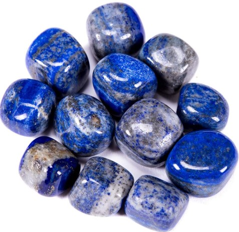
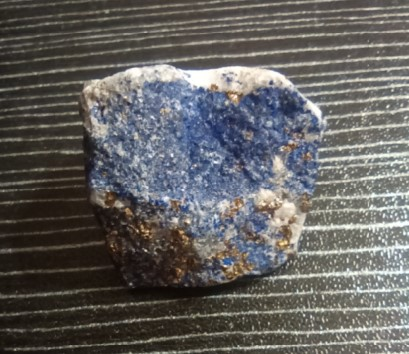

Il lapislazzuli (detto anche lapislazzulo) non è un singolo minerale, ma una roccia metamorfica composta prevalentemente da lazurite (un silicato di alluminio, sodio e zolfo, formula (Na,Ca)₈(AlSiO₄)₆(SO₄,S,Cl)₂), insieme a calcite bianca, sodalite e piriti dorate. Il suo caratteristico colore blu oltremare profondo – che ricorda un cielo notturno stellato – è dovuto alla presenza di ioni polisolfuro all'interno della struttura della lazurite.
I principali giacimenti si trovano in Afghanistan (le miniere di Sar-e-Sang, le più pregiate al mondo), Cile, Russia (lago Baikal) e Tagikistan. Fin dall'antichità, il lapislazzuli veniva macinato per ottenere il pigmento "blu oltremare", utilizzato da artisti del calibro di Giotto e Michelangelo. Le inclusioni di piriti dorate sono considerate un segno di autenticità e qualità, non un difetto.
Nell'antichità era considerata la pietra del cielo, della regalità e della verità. Gli antichi Egizi la utilizzavano per amuleti, scarabei e addirittura per il celebre corazza del faraone Tutankhamon. La parola "lapislazzuli" deriva dal latino lapis (pietra) e dal persiano lājvard (blu), da cui anche il termine "azzurro".
In cristalloterapia, il lapislazzuli è la pietra della saggezza, dell'intuizione e della comunicazione autentica. Aiuta a esprimere la propria verità con coraggio, a sviluppare l'intelletto e a connettersi con le proprie capacità intuitive. È considerato un potente alleato per chi cerca chiarezza mentale e spirituale.
Posizionato sul sesto chakra (Ajna, il terzo occhio) favorisce l'intuizione, la visione interiore, la saggezza e aiuta a distinguere la verità dall'illusione. Stimola anche il quinto chakra (gola), facilitando una comunicazione onesta e consapevole.

Il lapislazzuli accompagna l'umanità da millenni come simbolo di regalità, sacralità e conoscenza. Nell'antica Mesopotamia era dedicato alla dea Inanna, mentre nel mondo egizio era associato a Maat, la dea della verità e della giustizia. Si diceva che chi indossava il lapislazzuli fosse protetto dalle energie negative e potesse accedere a una comprensione più profonda della realtà.
Tenere un lapislazzuli sul comodino o vicino al letto si ritiene favorisca sogni lucidi e una connessione con l'inconscio profondo, aiutando a ricevere messaggi intuitivi e a sviluppare la memoria onirica. Portato con sé, stimola la sicurezza nell'esprimere le proprie opinioni e la capacità di ascolto autentico.
- Saggezza e verità interiore
- Intuizione e chiarezza mentale
- Comunicazione autentica
- Protezione spirituale
- Sul comodino per sogni lucidi
- Sul terzo occhio durante la meditazione
- In ufficio per chiarezza decisionale
- Come gioiello per espressione autentica
“Nell’antichità il lapislazzuli era considerato la pietra degli dèi e dei faraoni. Gli Egizi lo usavano per amuleti e scarabei sacri, simbolo di verità e giustizia.
In cristalloterapia, il lapislazzuli è la pietra della saggezza, dell'intuizione e della comunicazione autentica. Aiuta a esprimere la propria verità e a sviluppare l'intelletto.
Tenere un lapislazzuli sul comodino si ritiene favorisca sogni lucidi e la connessione con l'inconscio profondo. Sulla scrivania, in ufficio, stimola la chiarezza decisionale.
Posizionato sul sesto chakra (Ajna, il terzo occhio) favorisce l'intuizione, la visione interiore e aiuta a distinguere la verità dall'illusione. Stimola anche il quinto chakra (gola), facilitando una comunicazione onesta e consapevole.”

Cura e pulizia
Il lapislazzuli è una pietra relativamente tenera (durezza 5-5,5) e porosa. Evita il contatto con acidi, detergenti aggressivi e solventi. Puliscilo con un panno morbido leggermente inumidito, mai immerso. Ricaricalo al chiaro di luna o su un geodo di quarzo ialino.
Giacimenti e varietà
Il lapislazzuli più pregiato proviene dalle miniere di Sar-e-Sang in Afghanistan (blu intenso con inclusioni di pirite). Altri giacimenti si trovano in Cile, Russia, Tagikistan e Myanmar. Le varietà con poche venature di calcite bianca e piriti ben distribuite sono le più apprezzate.
Scienza e simbolo
La mineralogia spiega il suo colore con la presenza di zolfo nella lazurite; la tradizione lo associa alla regalità, alla verità e alla saggezza. Un perfetto connubio tra geologia e spiritualità, che ha affascinato Egizi, Sumeri e artisti del Rinascimento.